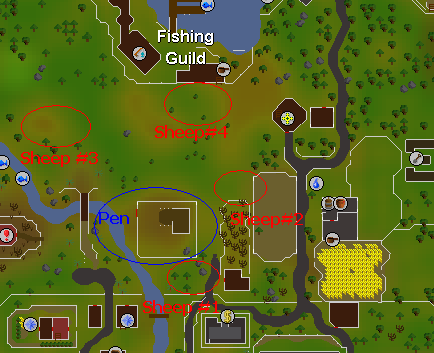
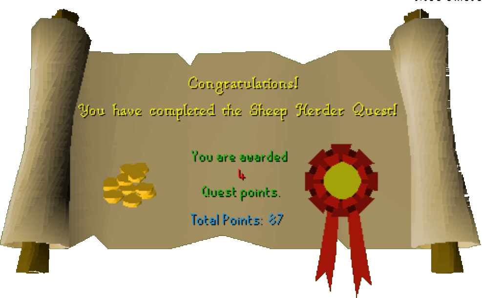

Sheep Herder
Description: Some plague infected sheep have escaped into East Ardounge. They must be found and disposed off before the whole town is infected, time is of the essence.Difficulty: Novice
Length: Short
Items & Skills Needed:
- Coins 100
Reward: 4 Quest points, 3,100 coins
Instructions:
Talk to Councilor Halgrive and he'll inform you of the dire situation. He gives you some poisoned feed and tells you to speak to Doctor Orbon in the chapel just north of him.
The doctor will tell you that you need a suit to protect you from the plague. He will sell one for 100gp. Go to the sheep pen just north of Ardougne by following the road that leads north next to the chapel.
Put on your suit and talk to Farmer Brunty in the pen. He'll tell you to grab the prod in the shed. Get and equip it.
You need to be on the opposite side of where you want the sheep to go. For example, be on the south side if you want them to go north. All the sheep have different face colors, so you won't get them mixed up too easily. Direct them to the pen gate and they should jump in when they are close enough. Once they are in, use the feed on them. Collect the bones, but don't put them in the furnace yet. Collect all four first (it works better).

Sheep #1: Go south to the northern Ardougne wall, where there should be a sheep. Prod it on the east, then north side of the pen to the gate.
Sheep #2: Go just east of the pen and prod it back. There should be at least one outside of the fenced area. It's the easiest one to grab.
Sheep #3: Go northwest past the warrior woman to find the sheep, and prod it to the gate.
Sheep #4: The last one's always the hardest. Head northeast to the Fishing Guild entrance, and go a little farther east to find the sheep. Prod him back to the pen.
If you're having trouble herding the sheep because you can't prod them fast enough, have a friend help by blocking them from running back to their starting point.
If you haven't finished off all the sheep yet, do so now. Use all their bones on the furnace.
If you've survived this rapid mouse-clicking experience, return to the Councilor and he'll reward you for your heroic efforts.
Congratulations, Quest Complete!

This quest guide was written by Gnat88. Thanks to Weezy for corrections.
This quest guide was entered into the database on Sat, Feb 28, 2004, at 05:31:59 PM by Monkeychris and CJH and was last updated on Sat, Oct 09, 2004, at 12:03:40 AM.